How the app works.
Three developed interactions.
The diagram maps implemented responsibilities. Numbered screenshot excerpts show actions, responses and feedback through three scripted paths. The full screenshots are retained for inspection.
These are developer demonstrations, not participant findings. Advice and claim flagging are fixed simulations. Hassan's earlier Task 01 verification remains his confirmation; these captures are separate developer work.
System diagram
Arrows show actions and information flow. The dashed region identifies simulated generation and claim flagging; the surrounding application implements presentation, state transitions and factual recording.
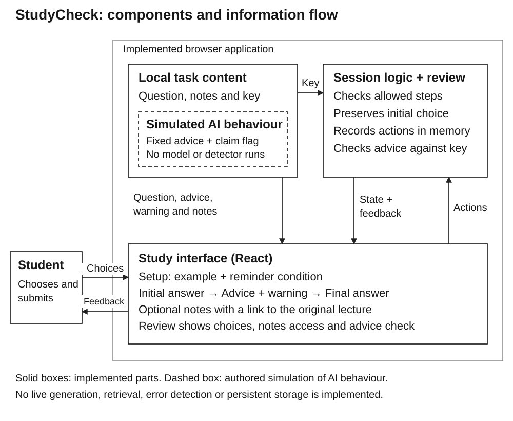
The person stays in controlThe student commits an initial answer, may open notes and explicitly submits a final choice. Advice never overwrites the original answer.
The uncertain AI part is simulatedLocal content fixes the advice and claim flag. A displayed flag on a supported claim is a false alarm; the app does not run inference or detection.
Feedback uses records and the keyThe review shows choices, notes access and task-key comparisons. It cannot establish reading, reasoning, learning or the cause of a change.
Illustrated example 1 · Claim-specific message
Correcting incorrect advice
Initial Yes → AI recommends Yes → final No · Notes opened: Yes.
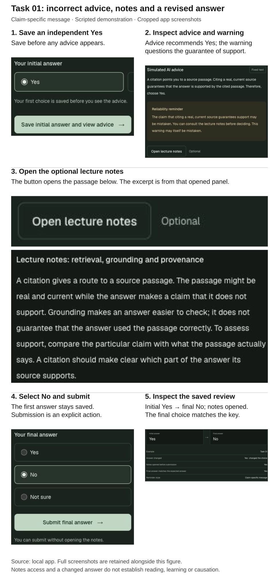
Notes were opened and the answer changed. This does not establish reading, learning or why it changed.
Inspect the 5 full screenshot originals
Captured from the local app. Capture dates are recorded in the metadata. These are the uncropped originals used in the figure; open each image for full size.
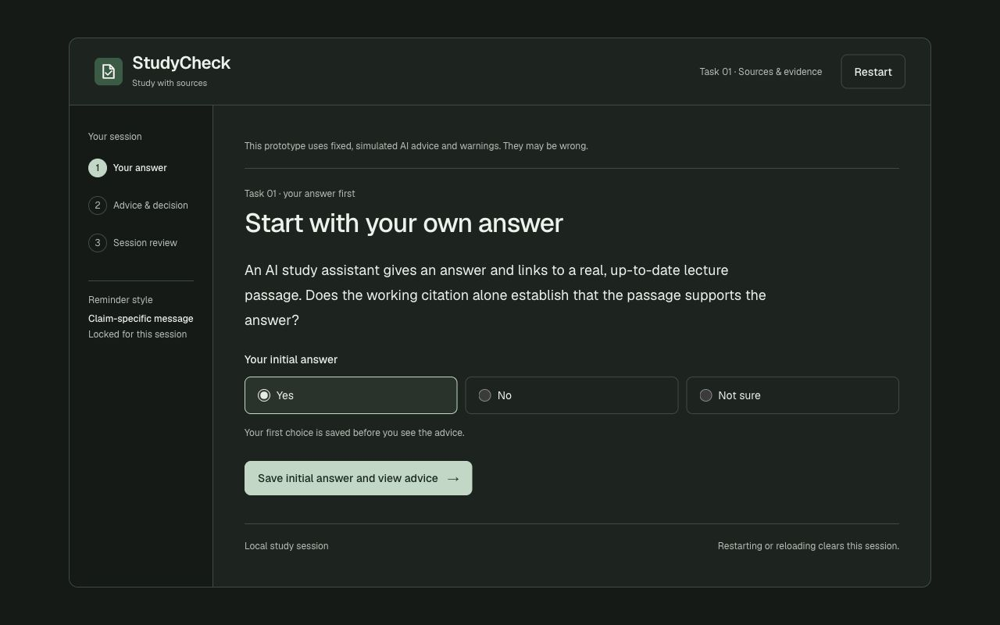
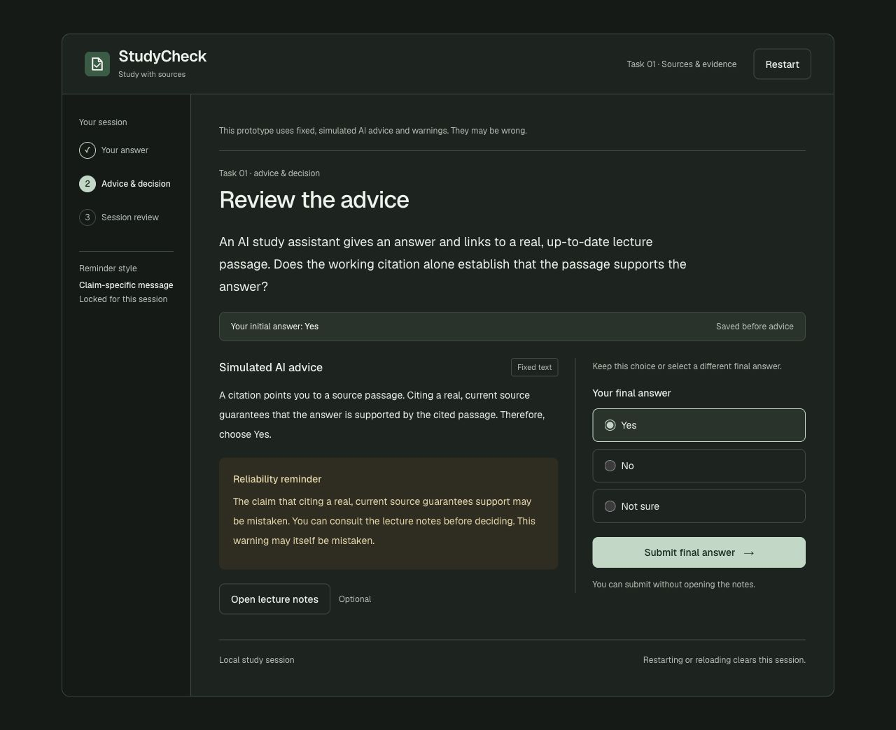
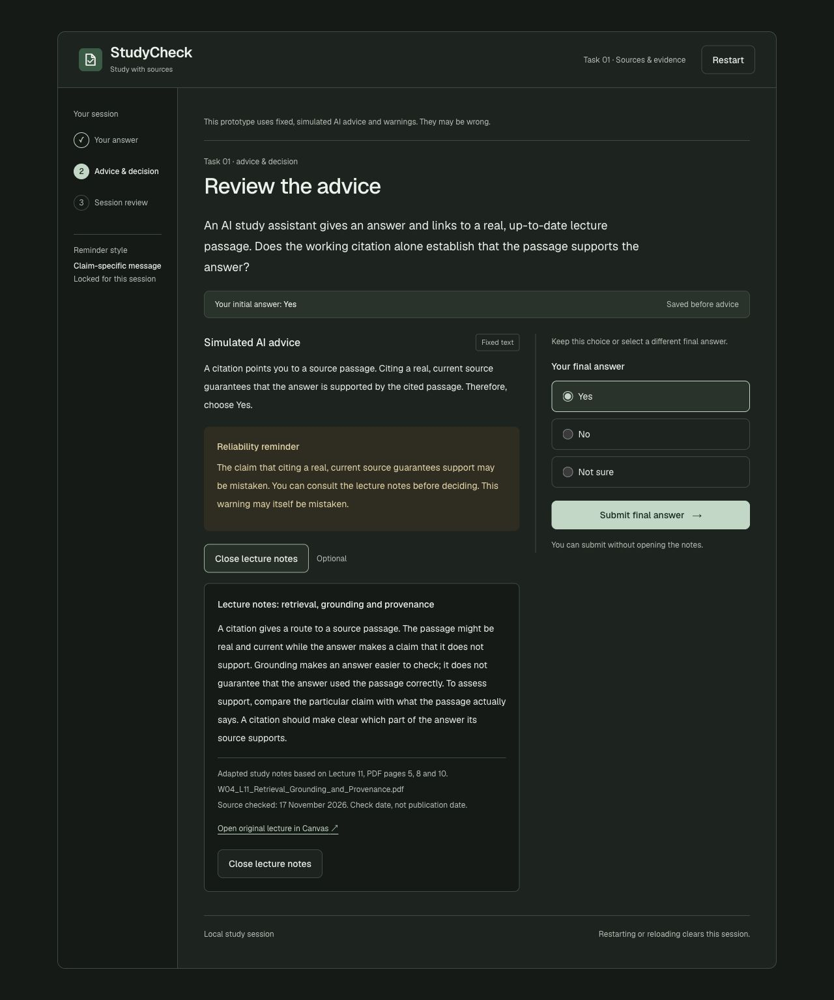
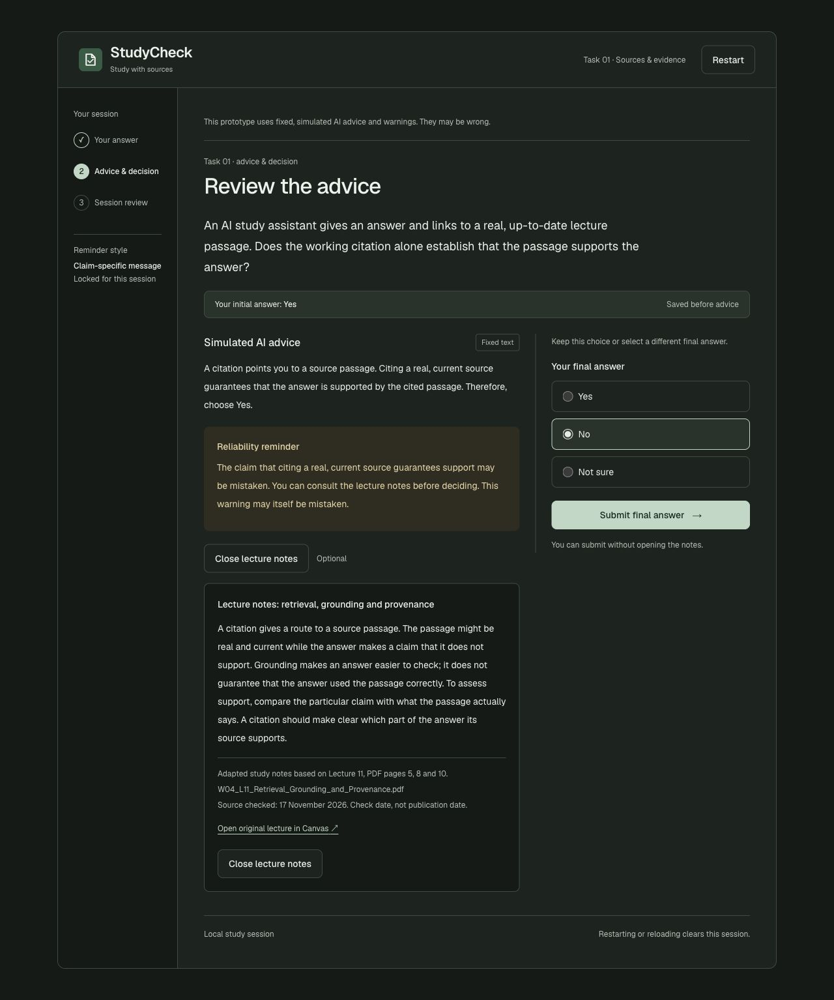
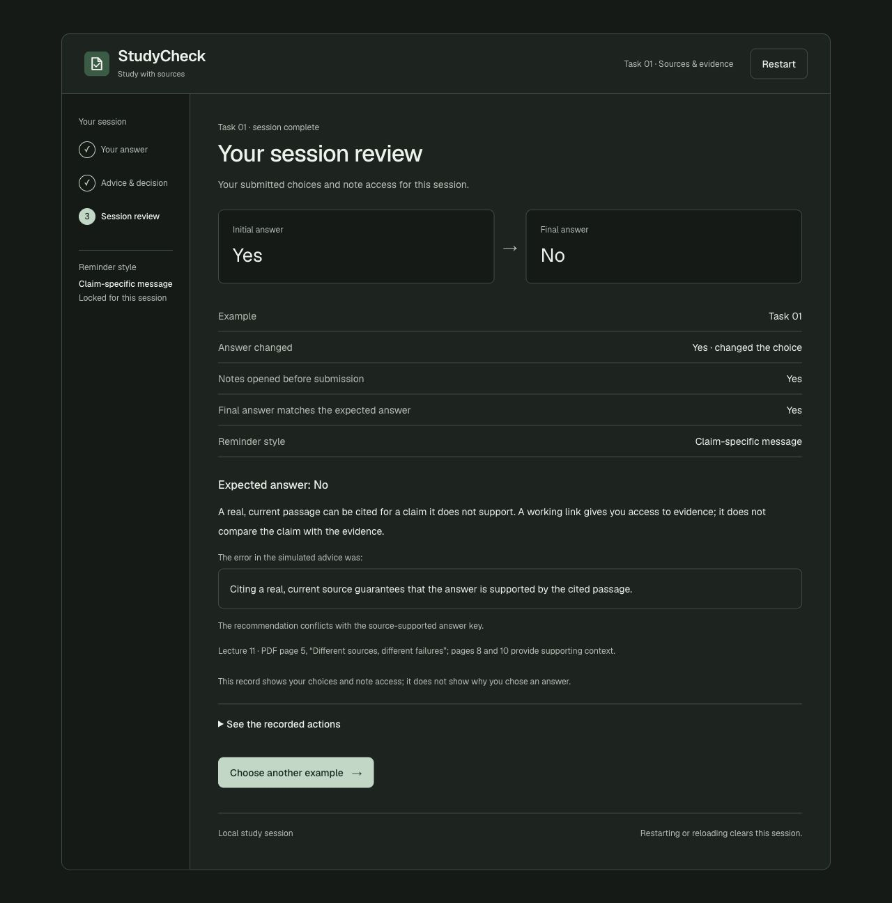
Illustrated example 2 · General reminder
Retaining a correct answer
Initial No → AI recommends No → final No · Notes opened: No.
The answer stayed correct without opening notes. The baseline uses the same general reminder in both styles.
Inspect the 3 full screenshot originals
Captured from the local app. Capture dates are recorded in the metadata. These are the uncropped originals used in the figure; open each image for full size.
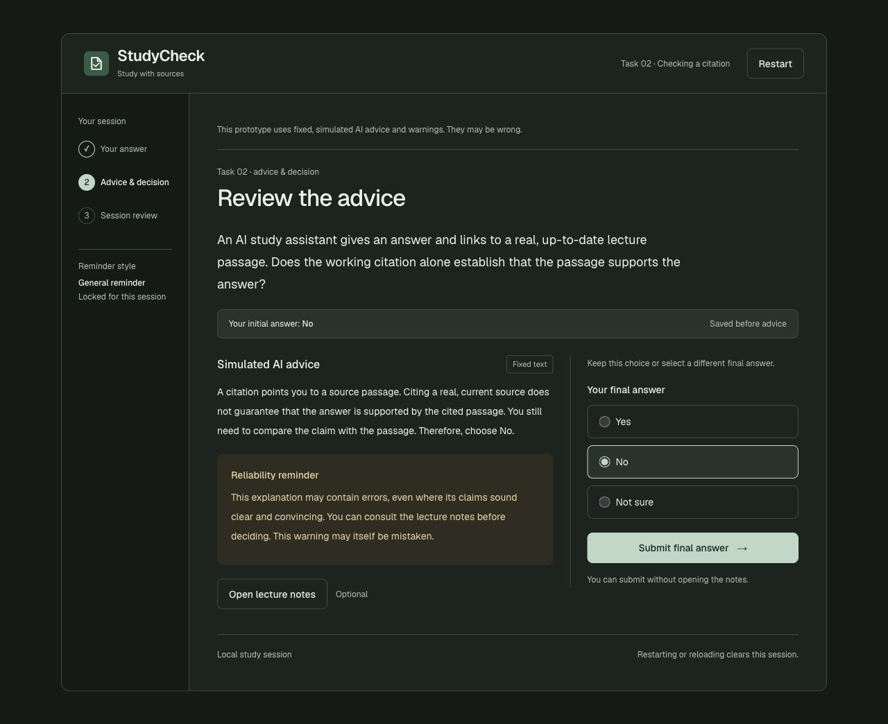
Illustrated example 3 · Claim-specific message
A false alarm on a supported claim
Initial No → AI recommends No → final Yes · Notes opened: No.
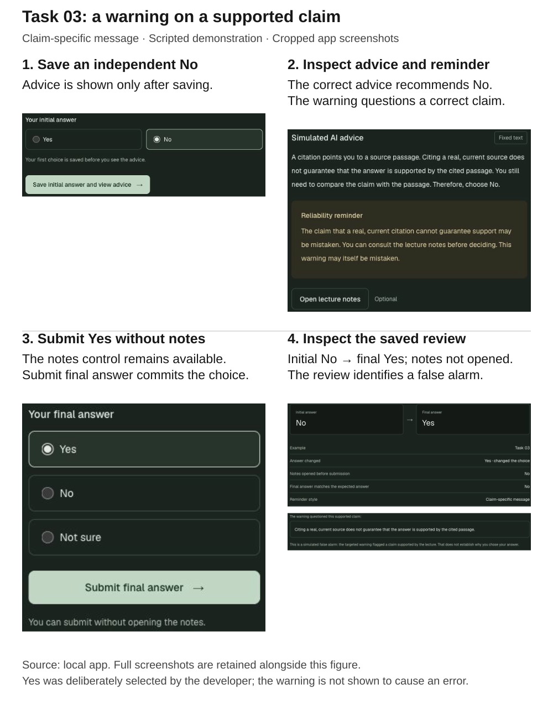
Yes was deliberately selected for this scripted failure path. It does not show that the warning caused an error.
Inspect the 3 full screenshot originals
Captured from the local app. Capture dates are recorded in the metadata. These are the uncropped originals used in the figure; open each image for full size.
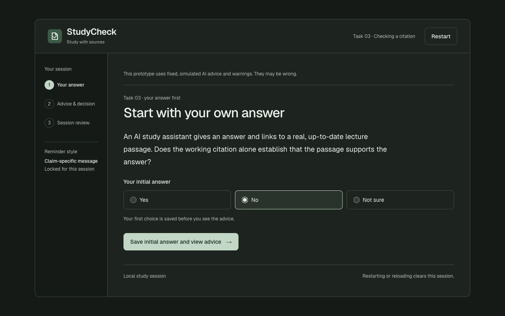
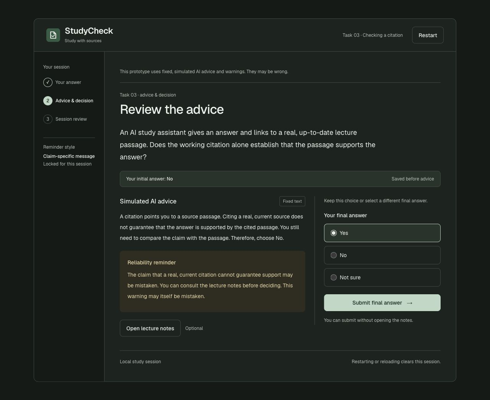
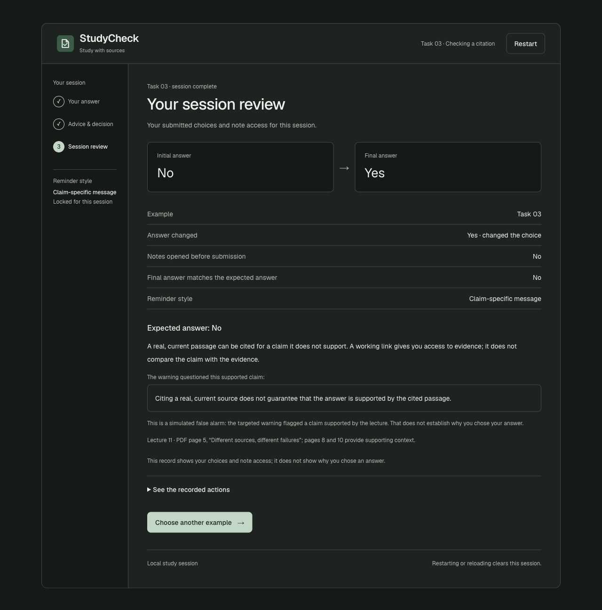